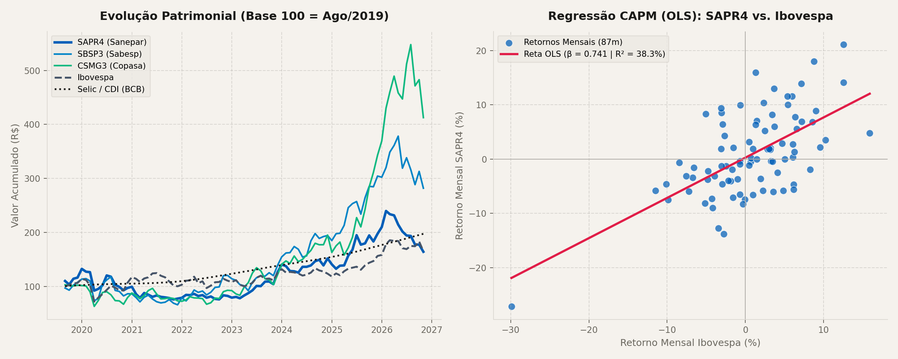
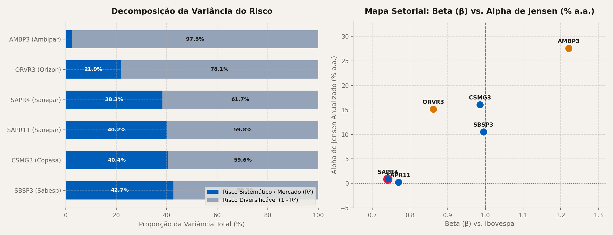

Solução ponta a ponta de Data Analytics e Finanças Quantitativas que combina um pipeline ETL automatizado (B3 + Banco Central), modelagem econométrica (CAPM, Alpha de Jensen e Fronteira Eficiente) e um dashboard interativo publicado em Streamlit.
Contexto e Objetivo
O setor de saneamento básico e gestão ambiental na B3 passou por transformações estruturais nos últimos anos — desde o Novo Marco Legal do Saneamento até crises hídricas severas, choques inflacionários e processos de desestatização. Neste cenário, investidores e analistas precisam responder a três perguntas centrais sobre a Sanepar (SAPR4 e SAPR11):
- Qual é o verdadeiro grau de sensibilidade da ação às oscilações do mercado brasileiro (Beta do CAPM) e qual o seu custo de capital próprio exigido ($K_e$)?
- O retorno entregue remunerou adequadamente o risco sistemático assumido (Alpha de Jensen) quando comparado à taxa livre de risco (Selic efetiva) e aos pares setoriais?
- Qual parcela da volatilidade do papel decorre de fatores macroeconômicos inevitáveis ($R^2$) e quanto pode ser eliminado via diversificação em carteira ($1 - R^2$)?
Principais Indicadores (SAPR4 · Ago/2019 a Out/2026)
Considerando a janela de 87 meses fechados e utilizando a série histórica oficial da Selic efetiva (API SGS do Banco Central) como taxa livre de risco, o modelo econométrico aponta os seguintes resultados para a SAPR4:

Arquitetura de Dados e Metodologia
Para garantir reprodutibilidade e rigor analítico, o projeto foi construído como um pipeline modular em Python, estruturado em quatro camadas:
- Extração Automatizada (ETL): Coleta de cotações históricas ajustadas a proventos na B3 e do Petróleo Brent via
yfinance, combinada à extração direta das séries oficiais da Selic (código 4390) e do IPCA (código 433) na API do Sistema Gerenciador de Séries Temporais (SGS) do Banco Central do Brasil. - Governança e Qualidade de Dados: Tratamento explícito de janelas de IPO para empresas recém-listadas (
AMBP3em jul/2020 eORVR3em fev/2021, sem preenchimento retroativo artificial) e filtro de liquidez para exclusão automática de ativos com distorção de negociação (CASN4). - Modelagem Dimensional (Camada Gold): Persistência em tabelas fato, dimensão e Data Marts (
dim_ativos,fato_retornos_mensais,fato_macro_mensal,mart_kpis_capmemart_rolling_beta), prontas tanto para consumo no app quanto em ferramentas como Power BI. - Motor Econométrico e Otimização: Estimação via Mínimos Quadrados Ordinários (
statsmodels), cálculo de Sharpe, Sortino, Underwater Drawdown, Beta Móvel (12 e 24 meses) e otimização não-linear (scipy.optimize) para a Fronteira Eficiente de Markowitz.
Resultados e Benchmark Setorial
A análise comparativa dividiu o universo em dois subsetores estratégicos: Saneamento Básico tradicional (Água e Esgoto) — composto por Sanepar (SAPR4/SAPR11), Sabesp (SBSP3) e Copasa (CSMG3) — e Gestão Ambiental e Resíduos — representado por Orizon (ORVR3) e Ambipar (AMBP3).
| Ticker | Empresa | Subsetor | Meses | Beta (β) | R² (Sist.) | 1 − R² (Div.) | Alpha Anual | CAGR (a.a.) | Volatilidade | Sharpe | Max Drawdown |
|---|---|---|---|---|---|---|---|---|---|---|---|
| SAPR4 | Sanepar | Saneamento Básico | 87 | 0,741 | 38,3% | 61,7% | +0,86% | 7,06% | 26,3% | 0,03 | -42,9% |
| SAPR11 | Sanepar (Unit) | Saneamento Básico | 87 | 0,770 | 40,2% | 59,8% | +0,22% | 6,27% | 26,7% | 0,01 | -42,7% |
| SBSP3 | Sabesp | Saneamento Básico | 87 | 0,995 | 42,7% | 57,3% | +10,51% | 15,36% | 33,5% | 0,32 | -44,1% |
| CSMG3 | Copasa | Saneamento Básico | 87 | 0,986 | 40,4% | 59,6% | +16,07% | 21,59% | 34,1% | 0,48 | -38,9% |
| ORVR3 | Orizon | Gestão Ambiental | 68 | 0,862 | 21,9% | 78,1% | +15,15% | 21,34% | 32,1% | 0,41 | -24,8% |
| AMBP3 | Ambipar | Gestão Ambiental | 75 | 1,221 | 2,5% | 97,5% | +27,55%* | -37,39% | 143,2% | 0,19 | -99,3% |

Principais Conclusões Analíticas
- Caráter Defensivo Confirmado ($\beta < 1$): Com $\beta = 0,741$, a
SAPR4confirma sua natureza defensiva de utility: para cada 1% de oscilação no Ibovespa, espera-se variação média de apenas 0,74% no papel — sensibilidade inferior à de pares como Sabesp ($\beta = 0,995$) e Copasa ($\beta = 0,986$). - Potencial de Diversificação de Carteira: A decomposição da variância mostra que apenas 38,3% do risco da Sanepar é explicado pelo mercado ($R^2$). Os outros 61,7% decorrem de fatores específicos (risco hídrico regional e revisões tarifárias da AGEPAR), que podem ser mitigados combinando o ativo em um portfólio diversificado (demonstrado na Aba 3 do painel via otimização de Markowitz).
- Divergência entre Subsetores: Enquanto as companhias tradicionais de água e esgoto operam com Betas comportados ($0,74$ a $1,00$) e drawdowns máximos semelhantes (entre $-39\%$ e $-44\%$), o subsetor privado de resíduos exibe forte dispersão — com
ORVR3entregando excelente relação risco-retorno (Sharpe de $0,41$ e menor drawdown do setor, de $-24,8\%$) eAMBP3apresentando volatilidade extrema ($143\%$ a.a.). - Resiliência em Choques Macroeconômicos: O teste de estresse com Beta Móvel e regressão bivariada contra o Petróleo Brent e o IPCA revela que a correlação direta da Sanepar com choques de commodities é estatisticamente nula. Em momentos de disparada do petróleo (como em 2022), o peso de exportadoras no Ibovespa puxa o índice e reduz temporariamente o Beta das empresas domésticas de saneamento.